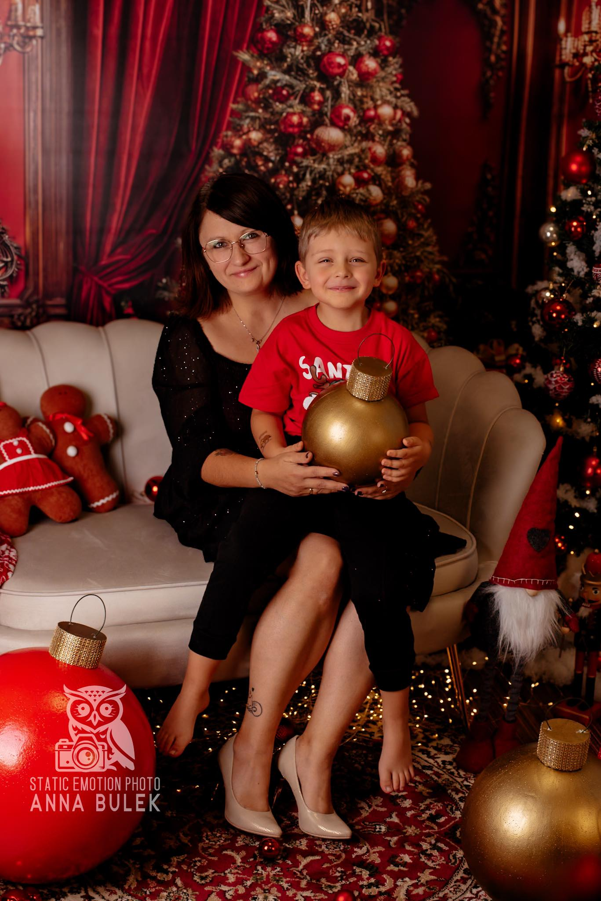

Sesje rodzinne
Bliskość, czułość i wspólne chwile uchwycone w naturalny sposób.
O mnie
Fotografia to dla mnie coś więcej niż zdjęcia — to emocje, światło, detale i wspomnienia zamknięte w jednym kadrze.

Mój styl
Tworzę fotografie pełne autentyczności i ciepła. Zależy mi na tym, aby każda sesja była spokojnym doświadczeniem, w którym można poczuć się swobodnie i po prostu być sobą.
Najbardziej inspirują mnie naturalne emocje, relacje i te małe momenty, które później stają się najcenniejszym wspomnieniem.
Specjalizacje
Bliskość, czułość i wspólne chwile uchwycone w naturalny sposób.
Radość, spontaniczność i delikatność dziecięcych emocji.
Subtelne, estetyczne kadry, które podkreślają piękno i charakter.
Wyjątkowe momenty, które zasługują na wyjątkową oprawę.